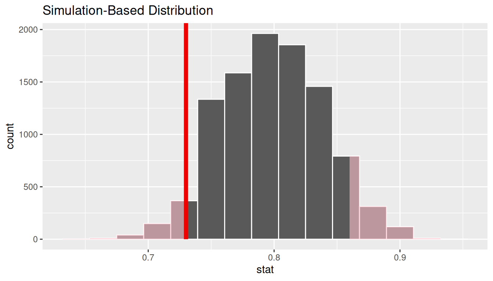

B.3 One proportion
B.3.1 Problem statement
The CEO of a large electric utility claims that 80 percent of his 1,000,000 customers are satisfied with the service they receive. To test this claim, the local newspaper surveyed 100 customers, using simple random sampling. 73 were satisfied and the remaining were unsatisfied. Based on these findings from the sample, can we reject the CEO’s hypothesis that 80% of the customers are satisfied? [Tweaked a bit from http://stattrek.com/hypothesis-test/proportion.aspx?Tutorial=AP]
B.3.2 Competing hypotheses
In words
- Null hypothesis: The proportion of all customers of the large electric utility satisfied with service they receive is equal 0.80.
- Alternative hypothesis: The proportion of all customers of the large electric utility satisfied with service they receive is different from 0.80.
In symbols (with annotations)
- \(H_0: \pi = p_{0}\), where \(\pi\) represents the proportion of all customers of the large electric utility satisfied with service they receive and \(p_0\) is 0.8.
- \(H_A: \pi \ne 0.8\)
Set \(\alpha\)
It’s important to set the significance level before starting the testing using the data. Let’s set the significance level at 5% here.
B.3.3 Exploring the sample data
The bar graph below also shows the distribution of satisfy.

The observed statistic is computed as
p_hat <- elec %>%
specify(response = satisfy, success = "satisfied") %>%
calculate(stat = "prop")
p_hat# A tibble: 1 x 1
stat
<dbl>
1 0.73Guess about statistical significance
We are looking to see if the sample proportion of 0.73 is statistically different from \(p_0 = 0.8\) based on this sample. They seem to be quite close, and our sample size is not huge here (\(n = 100\)). Let’s guess that we do not have evidence to reject the null hypothesis.
B.3.4 Non-traditional methods
Simulation for hypothesis test
In order to look to see if 0.73 is statistically different from 0.8, we need to account for the sample size. We also need to determine a process that replicates how the original sample of size 100 was selected. We can use the idea of an unfair coin to simulate this process. We will simulate flipping an unfair coin (with probability of success 0.8 matching the null hypothesis) 100 times. Then we will keep track of how many heads come up in those 100 flips. Our simulated statistic matches with how we calculated the original statistic \(\hat{p}\): the number of heads (satisfied) out of our total sample of 100. We then repeat this process many times (say 10,000) to create the null distribution looking at the simulated proportions of successes:
set.seed(2018)
null_distn_one_prop <- elec %>%
specify(response = satisfy, success = "satisfied") %>%
hypothesize(null = "point", p = 0.8) %>%
generate(reps = 10000) %>%
calculate(stat = "prop")
We can next use this distribution to observe our \(p\)-value. Recall this is a two-tailed test so we will be looking for values that are 0.8 - 0.73 = 0.07 away from 0.8 in BOTH directions for our \(p\)-value:

Bootstrapping for confidence interval
We can also create a confidence interval for the unknown population parameter \(\pi\) using our sample data. To do so, we use bootstrapping, which involves
- sampling with replacement from our original sample of 100 survey respondents and repeating this process 10,000 times,
- calculating the proportion of successes for each of the 10,000 bootstrap samples created in Step 1.,
- combining all of these bootstrap statistics calculated in Step 2 into a
boot_distnobject, - identifying the 2.5th and 97.5th percentiles of this distribution (corresponding to the 5% significance level chosen) to find a 95% confidence interval for \(\pi\), and
- interpret this confidence interval in the context of the problem.
boot_distn_one_prop <- elec %>%
specify(response = satisfy, success = "satisfied") %>%
generate(reps = 10000) %>%
calculate(stat = "prop")Just as we use the mean function for calculating the mean over a numerical variable, we can also use it to compute the proportion of successes for a categorical variable where we specify what we are calling a “success” after the ==. (Think about the formula for calculating a mean and how R handles logical statements such as satisfy == "satisfied" for why this must be true.)
# A tibble: 1 x 2
lower_ci upper_ci
<dbl> <dbl>
1 0.64 0.81
We see that 0.80 is contained in this confidence interval as a plausible value of \(\pi\) (the unknown population proportion). This matches with our hypothesis test results of failing to reject the null hypothesis.
Interpretation: We are 95% confident the true proportion of customers who are satisfied with the service they receive is between 0.64 and 0.81.
B.3.5 Traditional methods
Check conditions
Remember that in order to use the shortcut (formula-based, theoretical) approach, we need to check that some conditions are met.
Independent observations: The observations are collected independently.
The cases are selected independently through random sampling so this condition is met.
Approximately normal: The number of expected successes and expected failures is at least 10.
This condition is met since 73 and 27 are both greater than 10.
Test statistic
The test statistic is a random variable based on the sample data. Here, we want to look at a way to estimate the population proportion \(\pi\). A good guess is the sample proportion \(\hat{P}\). Recall that this sample proportion is actually a random variable that will vary as different samples are (theoretically, would be) collected. We are looking to see how likely is it for us to have observed a sample proportion of \(\hat{p}_{obs} = 0.73\) or larger assuming that the population proportion is 0.80 (assuming the null hypothesis is true). If the conditions are met and assuming \(H_0\) is true, we can standardize this original test statistic of \(\hat{P}\) into a \(Z\) statistic that follows a \(N(0, 1)\) distribution.
\[ Z =\dfrac{ \hat{P} - p_0}{\sqrt{\dfrac{p_0(1 - p_0)}{n} }} \sim N(0, 1) \]
Observed test statistic
While one could compute this observed test statistic by “hand” by plugging the observed values into the formula, the focus here is on the set-up of the problem and in understanding which formula for the test statistic applies. The calculation has been done in R below for completeness though:
[1] -1.75We see here that the \(z_{obs}\) value is around -1.75. Our observed sample proportion of 0.73 is 1.75 standard errors below the hypothesized parameter value of 0.8.
Visualize and compute \(p\)-value
elec %>%
specify(response = satisfy, success = "satisfied") %>%
hypothesize(null = "point", p = 0.8) %>%
calculate(stat = "z") %>%
visualize(method = "theoretical", obs_stat = z_obs, direction = "both")
[1] 0.0801The \(p\)-value—the probability of observing an \(z_{obs}\) value of -1.75 or more extreme (in both directions) in our null distribution—is around 8%.
Note that we could also do this test directly using the prop.test function.
prop.test(
x = table(elec$satisfy),
n = length(elec$satisfy),
alternative = "two.sided",
p = 0.8,
correct = FALSE
)
1-sample proportions test without continuity correction
data: table(elec$satisfy), null probability 0.8
X-squared = 3, df = 1, p-value = 0.08
alternative hypothesis: true p is not equal to 0.8
95 percent confidence interval:
0.636 0.807
sample estimates:
p
0.73 prop.test does a \(\chi^2\) test here but this matches up exactly with what we would expect: \(x^2_{obs} = 3.06 = (-1.75)^2 = (z_{obs})^2\) and the \(p\)-values are the same because we are focusing on a two-tailed test.
Note that the 95 percent confidence interval given above matches well with the one calculated using bootstrapping.
State conclusion
We, therefore, do not have sufficient evidence to reject the null hypothesis. Our initial guess that our observed sample proportion was not statistically greater than the hypothesized proportion has not been invalidated. Based on this sample, we have do not evidence that the proportion of all customers of the large electric utility satisfied with service they receive is different from 0.80, at the 5% level.
B.3.6 Comparing results
Observing the bootstrap distribution and the null distribution that were created, it makes quite a bit of sense that the results are so similar for traditional and non-traditional methods in terms of the \(p\)-value and the confidence interval since these distributions look very similar to normal distributions. The conditions also being met leads us to better guess that using any of the methods whether they are traditional (formula-based) or non-traditional (computational-based) will lead to similar results.